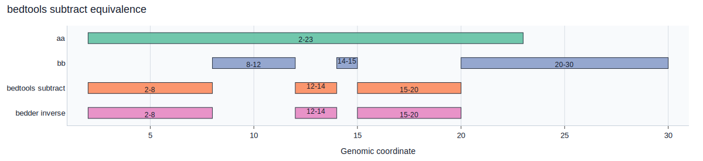
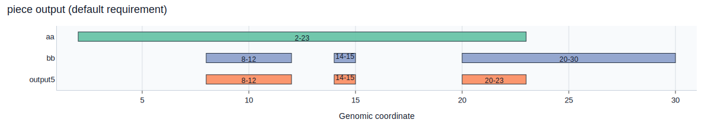
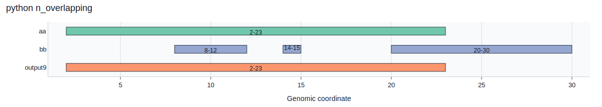
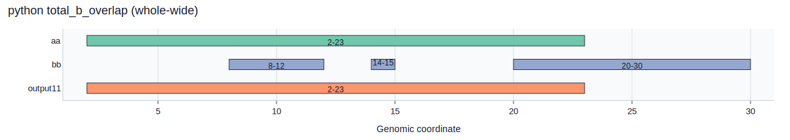

aa.bed
chr1 2 23
bb.bed
chr1 8 12 chr1 14 15 chr1 20 30
Here we show examples of how bedder can perform intersections. All examples uses these files (also shown to the right):
aa.bed
bb.bed
Reporting Piece
For, now, we focus on which part of each interval that is reported. The options for this are:
-p, --a-piece <A_PIECE>
a-piece [default: whole] [possible values: none, piece, whole, inverse, whole-wide]
--b-piece <B_PIECE>
b-piece [default: whole] [possible values: none, piece, whole, inverse, whole-wide]
Let's start with reporting a single line for the a interval if it overlaps using whole-wide and none of the b interval:
$ bedder intersect -a tests/examples/aa.bed -b tests/examples/bb.bed -g tests/examples/fake.fai --a-piece whole-wide --b-piece none
chr1 2 23
Using --a-piece whole instead reports one line per overlap (the a interval is repeated for each b it overlaps):
$ bedder intersect -a tests/examples/aa.bed -b tests/examples/bb.bed -g tests/examples/fake.fai --a-piece whole --b-piece none
chr1 2 23
chr1 2 23
chr1 2 23

We can also use --a-piece whole with --b-piece whole to see which b intervals each a overlaps:
$ bedder intersect -a tests/examples/aa.bed -b tests/examples/bb.bed -g tests/examples/fake.fai --a-piece whole --b-piece whole
chr1 2 23 chr1 8 12
chr1 2 23 chr1 14 15
chr1 2 23 chr1 20 30

Now, we report the pieces of the a interval along with the whole b interval that it overlapped:
$ bedder intersect -a tests/examples/aa.bed -b tests/examples/bb.bed -g tests/examples/fake.fai --a-piece piece --b-piece whole
chr1 8 12 chr1 8 12
chr1 14 15 chr1 14 15
chr1 20 23 chr1 20 30

And now the piece of a and the piece of b:
$ bedder intersect -a tests/examples/aa.bed -b tests/examples/bb.bed -g tests/examples/fake.fai --a-piece piece --b-piece piece
chr1 8 12 chr1 8 12
chr1 14 15 chr1 14 15
chr1 20 23 chr1 20 23

We can also report the inverse, that is, parts of a that do not overlap b:
$ bedder intersect -a tests/examples/aa.bed -b tests/examples/bb.bed -g tests/examples/fake.fai --a-piece inverse --b-piece none
chr1 2 8
chr1 12 14
chr1 15 20

Figure generated with scripts/render_interval_diagrams.py.
Replicating bedtools subtract
To reproduce:
Use bedder with --a-piece inverse --b-piece none:
$ bedder intersect -a aa.bed -b bb.bed -g fake.fai --a-piece inverse --b-piece none
chr1 2 8
chr1 12 14
chr1 15 20

There are other many combinations of parameters, some of which are not very helpful!
Overlap Requirements
The default in bedder is that a single base of overlap is sufficient to report. However we can add constraints to this with these arguments:
-r, --a-requirements <A_REQUIREMENTS>
a-requirements for overlap. A float value < 1 or a number ending with % will be the fraction (or %) of the interval. An integer will be the number of bases. [default: 1]
-R, --b-requirements <B_REQUIREMENTS>
b-requirements for overlap. A float value < 1 or a number ending with % will be the fraction (or %) of the interval. An integer will be the number of bases. [default: 1]
Here is the default, requiring a single base of overlap:
$ bedder intersect -a tests/examples/aa.bed -b tests/examples/bb.bed -g tests/examples/fake.fai --a-piece piece --b-piece none --a-requirements 1
chr1 8 12
chr1 14 15
chr1 20 23

We can update that to require at least 3 bases:
$ bedder intersect -a tests/examples/aa.bed -b tests/examples/bb.bed -g tests/examples/fake.fai --a-piece whole-wide --b-piece whole-wide --a-requirements 3 --a-mode piece
chr1 2 23 chr1 8 12 chr1 20 30

We can also report each a piece:
$ bedder intersect -a tests/examples/aa.bed -b tests/examples/bb.bed -g tests/examples/fake.fai --a-piece piece --b-piece whole --b-requirements 3 --a-mode piece
chr1 8 12 chr1 8 12
chr1 20 23 chr1 20 30

If we don't specify --a-mode piece then it checks across the entire interval so each piece of a is reported even though one of the pieces is not 3 bases:
$ bedder intersect -a tests/examples/aa.bed -b tests/examples/bb.bed -g tests/examples/fake.fai --a-piece piece --b-piece whole --b-requirements 3
chr1 8 12 chr1 8 12
chr1 14 15 chr1 14 15
chr1 20 23 chr1 20 30

Python functions
We can output custom columns with python functions. The python function must accept a fragment, part of an overlap, and have a return type of str, int, bool or float.
The function must begin with bedder_. For example, we can have a function like this that will return the number of b intervals overlapping the a interval:
This tells bedder that the return type will be an integer. And the user will refer to the function as py:n_overlapping (without arguments).
We put this in a file called example.py and then run with an argument of -c py:n_overlapping as:
$ bedder intersect -a tests/examples/aa.bed -b tests/examples/bb.bed -g tests/examples/fake.fai --a-piece whole-wide --b-piece piece --python tests/examples/example.py -c 'py:n_overlapping'
chr1 2 23 chr1 8 12 chr1 14 15 chr1 20 23 3

Where the final column shows the expected value of 3.
Another example is that total bases of b that overlap an a interval:
And call as:
$ bedder intersect -a tests/examples/aa.bed -b tests/examples/bb.bed -g tests/examples/fake.fai --a-piece whole-wide --b-piece piece --python tests/examples/example.py -c 'py:total_b_overlap'
chr1 2 23 chr1 8 12 chr1 14 15 chr1 20 23 8

Note that if we change the --b-piece to whole-wide we get a different value as expected:
$ bedder intersect -a tests/examples/aa.bed -b tests/examples/bb.bed -g tests/examples/fake.fai --a-piece whole-wide --b-piece whole-wide --python tests/examples/example.py -c 'py:total_b_overlap'
chr1 2 23 chr1 8 12 chr1 14 15 chr1 20 30 15

and likewise if we change --a-piece to piece:
$ bedder intersect -a tests/examples/aa.bed -b tests/examples/bb.bed -g tests/examples/fake.fai --a-piece piece --b-piece whole --python tests/examples/example.py -c 'py:total_b_overlap'
chr1 8 12 chr1 8 12 4
chr1 14 15 chr1 14 15 1
chr1 20 23 chr1 20 30 10

VCF and getting to the concrete type
Until now, we have relied on the generic trait methods chrom, start, stop in the python functions, but we also have access to the concrete types.
For example, if we know it's a vcf, we can access the underlying variant and only count the depth if the filter is pass: